Open Music Theory：繁體中文版
看譜數拍與視唱範例：第2級
本章延續前一章由淺入深的節奏與旋律，包含先前學過的拍節與調號。本章從一開始就假定讀者已了解力度、奏法及樂句標記。所有練習均由本章作者編寫。
第4節
以下八個練習包含時值不占滿一整小節的附點音值，現在也加入力度記號以及漸強、漸弱。
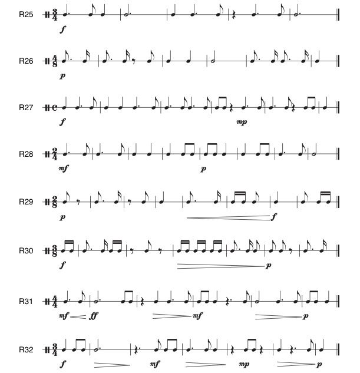
R為節奏練習的編號。
- f＝強；
- p＝弱；
- mp＝中弱；
- mf＝中強；
- ff＝很強。
開口擴大的楔形線表示漸強，縮小表示漸弱。
以下兩個練習包含時值不占滿一整小節的附點音值。
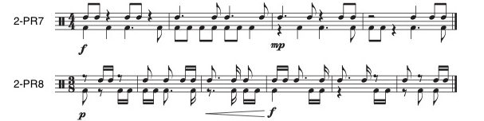
2-PR為二聲部節奏練習的編號。
- f＝強；
- mp＝中弱；
- p＝弱。
開口擴大的楔形線表示漸強，縮小表示漸弱。
以下四個練習是大調旋律，包含主三和弦內的三度與四度跳進。
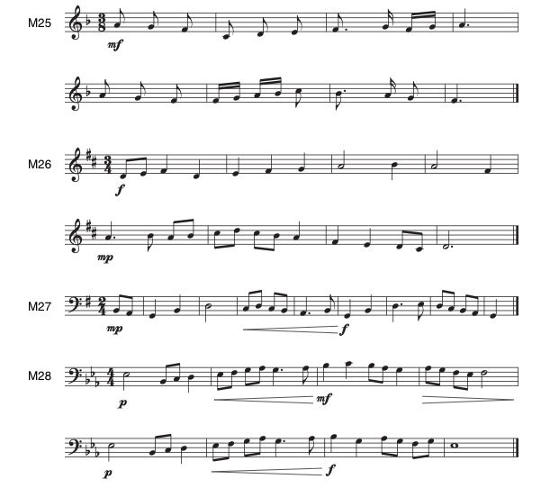
M為旋律練習的編號。
- mf＝中強；
- f＝強；
- mp＝中弱；
- p＝弱。
開口擴大的楔形線表示漸強，縮小表示漸弱。
以下四個練習是小調旋律，包含主三和弦內的三度與四度跳進。
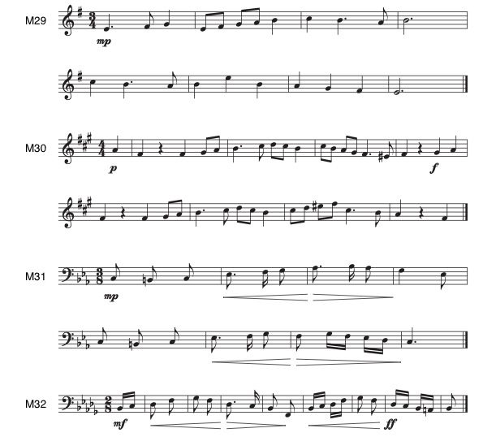
M為旋律練習的編號。
- mp＝中弱；
- p＝弱；
- f＝強；
- mf＝中強；
- ff＝很強。
開口擴大的楔形線表示漸強，縮小表示漸弱。
以下兩個練習是二聲部旋律，包含主三和弦內的三度與四度跳進。
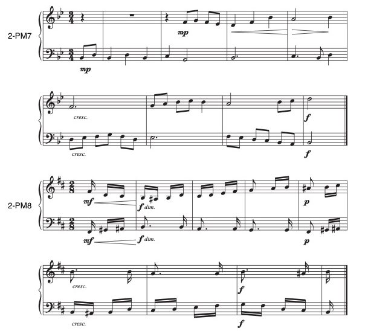
2-PM為二聲部旋律練習的編號。
- mp＝中弱；
- f＝強；
- mf＝中強；
- p＝弱；
- cresc.＝漸強；
- dim.＝漸弱。
開口擴大的楔形線表示漸強，縮小表示漸弱。
查看英文原文
Key Takeaways
- No new beat units, time signatures, or beat divisions are introduced in this chapter.
- This chapter includes dotted rhythmic values that have a duration smaller than a full measure. (To review this topic see Notating Rhythm.)
- A tie is a curved line that connects two or more notes with the same pitch. Tied-to notes are not rearticulated.
- Dynamics and articulations are covered in this chapter. (To review this topic see Other Aspects of Notation.)
- Melodies within this chapter include leaps of thirds, fourths, fifths, and octaves within the tonic triad.
- This chapter includes two-part rhythms and two-part melodies.
This chapter builds upon the prior gradated rhythms and melodies. Previously studied meters and key signatures are included. Knowledge of dynamics, articulations, and phrase markings is assumed from the beginning of this chapter. All exercises are author-composed.
Section 4
The following eight exercises include dotted rhythmic values that do not have the duration of a full measure. Dynamic markings as well as crescendos and decrescendos are now included.
The following two exercises include dotted rhythmic values that do not have the duration of a full measure.
The following four exercises are melodies in the major mode that include leaps of thirds and fourths within the tonic triad.
The following four exercises are melodies in the minor mode that include leaps of thirds and fourths within the tonic triad.
The following two exercises are two-part melodies that include leaps of thirds and fourths within the tonic triad.
第5節
以下八個練習是節奏練習，包含小節內的延音線，現在也加入奏法記號。
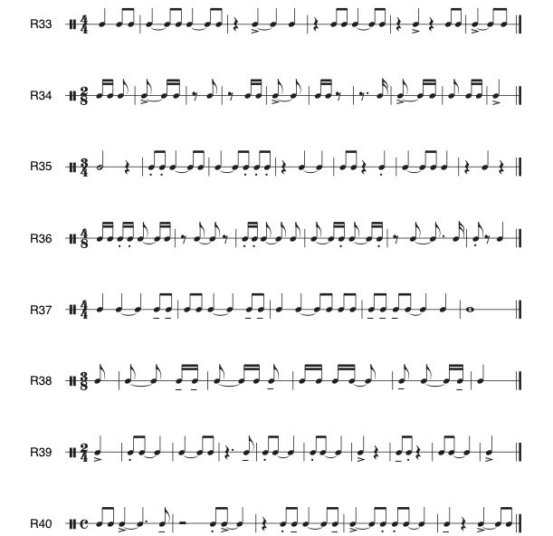
R為節奏練習的編號。
符頭上方或下方的小點表示斷奏，短橫線表示保持音，>表示重音。
同音高音符間的延音線表示合併時值、不重新起音。
以下兩個練習是二聲部節奏，包含小節內的延音線。
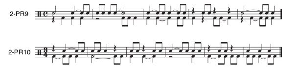
2-PR為二聲部節奏練習的編號。
同音高音符間的延音線表示合併時值、不重新起音。
以下四個練習是大調旋律，包含更頻繁的主三和弦內三度與四度跳進。
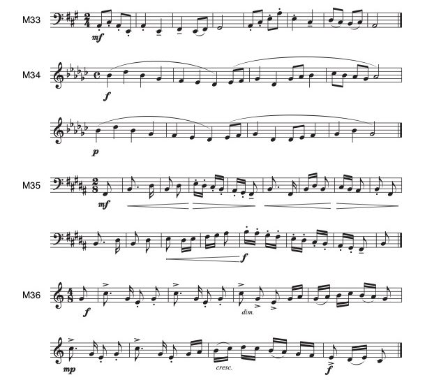
M為旋律練習的編號。
- mf＝中強；
- f＝強；
- p＝弱；
- mp＝中弱；
- dim.＝漸弱；
- cresc.＝漸強。
開口擴大的楔形線表示漸強，縮小表示漸弱。
符頭上方或下方的小點表示斷奏，短橫線表示保持音，>表示重音。
以下四個練習是小調旋律，包含更頻繁的主三和弦內三度與四度跳進。
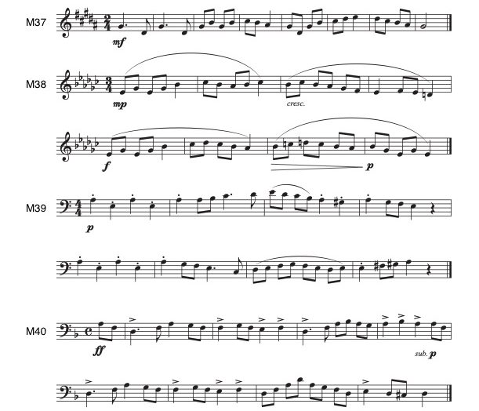
M為旋律練習的編號。
- mf＝中強；
- mp＝中弱；
- cresc.＝漸強；
- f＝強；
- p＝弱；
- ff＝很強；
- sub. p＝突然轉弱。
開口擴大的楔形線表示漸強，縮小表示漸弱。
小點表示斷奏，>表示重音，長弧線表示連奏／樂句分組。
以下兩個練習是二聲部旋律，包含更頻繁的主三和弦內三度與四度跳進。
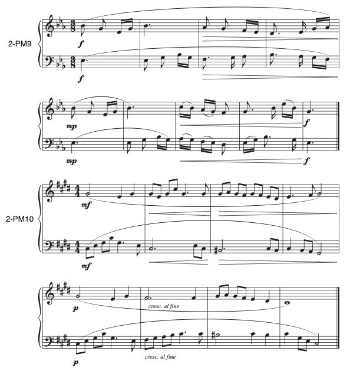
2-PM為二聲部旋律練習的編號。
- f＝強；
- mp＝中弱；
- mf＝中強；
- p＝弱；
- cresc. al fine＝逐漸加強直到結尾。
開口擴大的楔形線表示漸強，縮小表示漸弱。
長弧線表示連奏／樂句分組。
查看英文原文
Section 5
The following eight exercises are rhythms that include ties that are within measures. Articulations are now included.
The following two exercises are two-part rhythms that include ties that are within measures.
The following four exercises are melodies in the major mode that include more frequent leaps of thirds and fourths within the tonic triad.
The following four exercises are melodies in the minor mode that include more frequent leaps of thirds and fourths within the tonic triad.
The following two exercises are two-part melodies that include more frequent leaps of thirds and fourths within the tonic triad.
第6節
以下八個練習是節奏練習，包含跨越小節線的延音線。
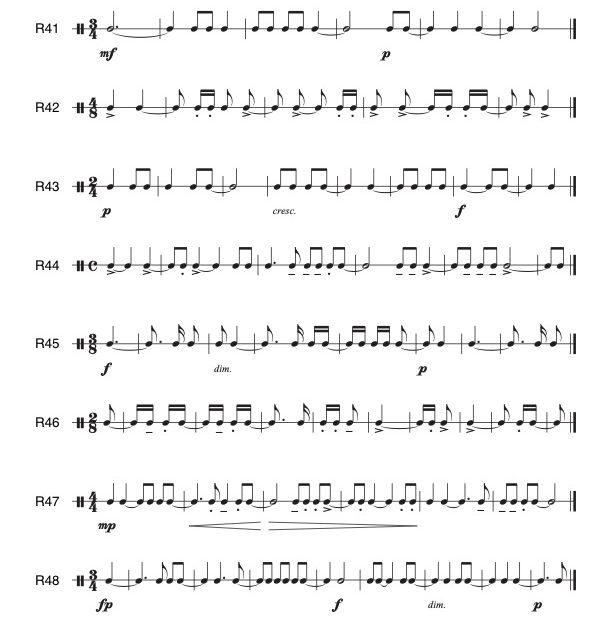
R為節奏練習的編號。
- mf＝中強；
- p＝弱；
- f＝強；
- mp＝中弱；
- fp＝先強後立即轉弱；
- cresc.＝漸強；
- dim.＝漸弱。
開口擴大的楔形線表示漸強，縮小表示漸弱。
符頭上方或下方的小點表示斷奏，短橫線表示保持音，>表示重音。
同音高音符間的延音線表示合併時值、不重新起音。
以下兩個練習是二聲部節奏，包含跨越小節線的延音線。
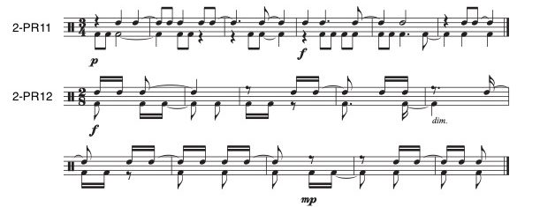
2-PR為二聲部節奏練習的編號。
- p＝弱；
- f＝強；
- dim.＝漸弱；
- mp＝中弱。
同音高音符間的延音線表示合併時值、不重新起音。
以下四個練習是大調旋律，包含主三和弦內較大的五度與八度跳進。
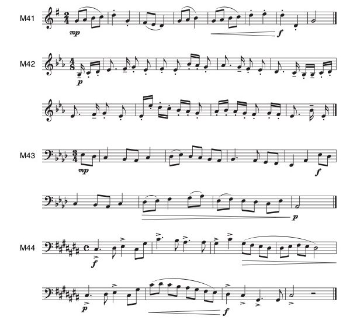
M為旋律練習的編號。
- mp＝中弱；
- f＝強；
- p＝弱。
開口擴大的楔形線表示漸強，縮小表示漸弱。
符頭上方或下方的小點表示斷奏，短橫線表示保持音，>表示重音。
以下四個練習是小調旋律，包含主三和弦內較大的五度與八度跳進。
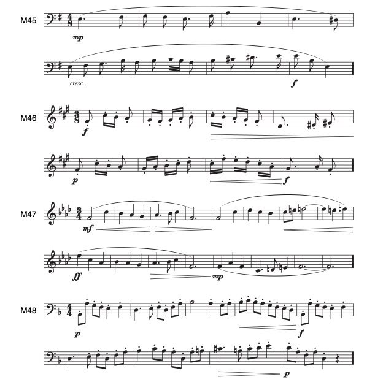
M為旋律練習的編號。
- mp＝中弱；
- cresc.＝漸強；
- f＝強；
- p＝弱；
- mf＝中強；
- ff＝很強。
開口擴大的楔形線表示漸強，縮小表示漸弱。
小點表示斷奏，長弧線表示連奏／樂句分組。
以下兩個練習是二聲部旋律，包含主三和弦內較大的五度與八度跳進。
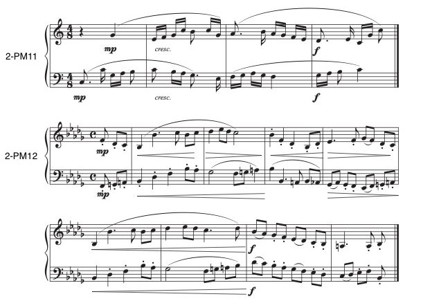
- Chenette, Timothy。2022。〈聽覺能力教學研究〉（Aural Skills Pedagogy Research），收於《聽覺能力基礎》（Foundations of Aural Skills）。Pressbooks：https://uen.pressbooks.pub/auralskills/back-matter/aural-skills-pedagogy-research/。
- ——。2021。〈什麼才是真正的聽覺能力？〉（What are the Truly Aural Skills?）。Music Theory Online 27，第2期：https://mtosmt.org/issues/mto.21.27.2/mto.21.27.2.chenette.html。
- Chenette, Timothy、Stacey Davis與Stanley Kleppinger。2022。〈當前聽覺能力教材與教學實務的批判性回顧〉（A Critical Review of Current Aural Skill Materials and Pedagogical Practices）。Journal of Music Theory Pedagogy 36，6：https://digitalcollections.lipscomb.edu/jmtp/vol36/iss1/6。
- Cleland, Kent與Paul Fleet。2021。《Routledge聽覺能力教學指南》（The Routledge Companion to Aural Skills Pedagogy）。紐約：Routledge。
- Floyd, Eva G.與Marshall A. Haning。2014。〈視唱教學：合唱教學法教材的脈絡分析〉（Sight-Singing Pedagogy: A Context Analysis of Choral Methods Textbooks）。Journal of Music Teacher Education 25，第1期：11–22。
- Karpinski, Gary。2021。《音感訓練與視唱手冊》（Manual for Ear Training and Sight Singing）。紐約：Norton。
- ——。2000。《聽覺能力的習得》（Aural Skills Acquisition）。紐約：Oxford。
- Kleppinger, Stanley。2017。〈關於聽覺能力評量的實務與哲學省思〉（Practical and Philosophical Reflections Regarding Aural Skills Assessment）。Indiana Theory Review 33，第1–2期：153–182。
- Rogers, Nancy與Robert W. Ottman。2021。《視唱音樂教材》（Music for Sight Singing）。倫敦：Pearson。
- Urist, Diane J.。2016。《聽覺能力課堂中的身體律動：以律動教學為基礎的方法》（The Moving Body in the Aural Skills Classroom: a Eurhythmics Based Approach）。紐約：Oxford。
2-PM為二聲部旋律練習的編號。
- mp＝中弱；
- cresc.＝漸強；
- f＝強。
開口擴大的楔形線表示漸強，縮小表示漸弱。
小點表示斷奏，短橫線表示保持音，長弧線表示連奏／樂句分組。
媒體來源與授權
- 第4節節奏，© 萊維・蘭戈爾夫（Levi Langolf），採用CC BY-SA（姓名標示—相同方式分享）授權。
- 第4節二聲部節奏，© 萊維・蘭戈爾夫（Levi Langolf），採用CC BY-SA（姓名標示—相同方式分享）授權。
- 第4節大調旋律，© 萊維・蘭戈爾夫（Levi Langolf），採用CC BY-SA（姓名標示—相同方式分享）授權。
- 第4節小調旋律，© 萊維・蘭戈爾夫（Levi Langolf），採用CC BY-SA（姓名標示—相同方式分享）授權。
- 第4節二聲部旋律，© 萊維・蘭戈爾夫（Levi Langolf），採用CC BY-SA（姓名標示—相同方式分享）授權。
- 第5節節奏，© 萊維・蘭戈爾夫（Levi Langolf），採用CC BY-SA（姓名標示—相同方式分享）授權。
- 第5節二聲部節奏，© 萊維・蘭戈爾夫（Levi Langolf），採用CC BY-SA（姓名標示—相同方式分享）授權。
- 第5節大調旋律，© 萊維・蘭戈爾夫（Levi Langolf），採用CC BY-SA（姓名標示—相同方式分享）授權。
- 第5節小調旋律，© 萊維・蘭戈爾夫（Levi Langolf），採用CC BY-SA（姓名標示—相同方式分享）授權。
- 第5節二聲部旋律，© 萊維・蘭戈爾夫（Levi Langolf），採用CC BY-SA（姓名標示—相同方式分享）授權。
- 第6節節奏，© 萊維・蘭戈爾夫（Levi Langolf），採用CC BY-SA（姓名標示—相同方式分享）授權。
- 第6節二聲部節奏，© 萊維・蘭戈爾夫（Levi Langolf），採用CC BY-SA（姓名標示—相同方式分享）授權。
- 第6節大調旋律，© 萊維・蘭戈爾夫（Levi Langolf），採用CC BY-SA（姓名標示—相同方式分享）授權。
- 第6節小調旋律，© 萊維・蘭戈爾夫（Levi Langolf），採用CC BY-SA（姓名標示—相同方式分享）授權。
- 第6節二聲部旋律，© 萊維・蘭戈爾夫（Levi Langolf），採用CC BY-SA（姓名標示—相同方式分享）授權。
查看英文原文
Section 6
The following eight exercises are rhythms that include ties that extend across bar lines.
The following two exercises are two-part rhythms that include ties that extend across bar lines.
The following four exercises are melodies in the major mode that include larger leaps of fifths and octaves within the tonic triad.
The following four exercises are melodies in the minor mode that include larger leaps of fifths and octaves within the tonic triad.
The following two exercises are two-part melodies that include larger leaps of fifths and octaves within the tonic triad.
- Chenette, Timothy. 2022, “Aural Skills Pedagogy Research.” Foundations of Aural Skills. Pressbooks: https://uen.pressbooks.pub/auralskills/back-matter/aural-skills-pedagogy-research/.
- ——. 2021. “What are the Truly Aural Skills?” Music Theory Online 27, no. 2: https://mtosmt.org/issues/mto.21.27.2/mto.21.27.2.chenette.html.
- Chenette, Timothy, Stacey Davis, and Stanley Kleppinger. 2022. “A Critical Review of Current Aural Skill Materials and Pedagogical Practices.” Journal of Music Theory Pedagogy 36, 6: https://digitalcollections.lipscomb.edu/jmtp/vol36/iss1/6.
- Cleland, Kent and Paul Fleet. 2021. The Routledge Companion to Aural Skills Pedagogy. New York: Routledge.
- Floyd, Eva G. and Marshall A. Haning. 2014. “Sight-Singing Pedagogy: A Context Analysis of Choral Methods Textbooks.” Journal of Music Teacher Education 25, no. 1: 11–22.
- Karpinski, Gary. 2021. Manual for Ear Training and Sight Singing. New York: Norton.
- ——. 2000. Aural Skills Acquisition. New York: Oxford.
- Kleppinger, Stanley. 2017. “Practical and Philosophical Reflections Regarding Aural Skills Assessment.” Indiana Theory Review 33, nos. 1–2: 153–182.
- Rogers, Nancy and Robert W. Ottman. 2021. Music for Sight Singing. London: Pearson.
- Urist, Diane J. 2016. The Moving Body in the Aural Skills Classroom: a Eurhythmics Based Approach. New York: Oxford.
- Melodies for Sight Singing (teoria)
- Melodies for Sight Singing (Chorale Tech)
- Melodies for Sight Singing (Ronnie Sanders)
- Rhythms for Sight Counting (Blue Sky Music)
- Sight Singing by Level (YouTube)
- Multimodal Musicianship: Rhythms, Melodies, Rhythmic/Melodic/Harmonic Dictations (Victoria Malawey)
- Foundations of Aural Skills (Timothy Chenette)
Media Attributions
- Section 4 Rhythms © Levi Langolf is licensed under a CC BY-SA (Attribution ShareAlike) license
- Section 4 Two-part Rhythms © Levi Langolf is licensed under a CC BY-SA (Attribution ShareAlike) license
- Section 4 Major Melodies © Levi Langolf is licensed under a CC BY-SA (Attribution ShareAlike) license
- Section 4 Minor Melodies © Levi Langolf is licensed under a CC BY-SA (Attribution ShareAlike) license
- Section 4 Two-part Melodies © Levi Langolf is licensed under a CC BY-SA (Attribution ShareAlike) license
- Section 5 Rhythms © Levi Langolf is licensed under a CC BY-SA (Attribution ShareAlike) license
- Section 5 Two-part Rhythms © Levi Langolf is licensed under a CC BY-SA (Attribution ShareAlike) license
- Section 5 Major Melodies © Levi Langolf is licensed under a CC BY-SA (Attribution ShareAlike) license
- Section 5 Minor Melodies © Levi Langolf is licensed under a CC BY-SA (Attribution ShareAlike) license
- Section 5 Two-part Melodies © Levi Langolf is licensed under a CC BY-SA (Attribution ShareAlike) license
- Section 6 Rhythms © Levi Langolf is licensed under a CC BY-SA (Attribution ShareAlike) license
- Section 6 Two-part Rhythms © Levi Langolf is licensed under a CC BY-SA (Attribution ShareAlike) license
- Section 6 Major Melodies © Levi Langolf is licensed under a CC BY-SA (Attribution ShareAlike) license
- Section 6 Minor Melodies © Levi Langolf is licensed under a CC BY-SA (Attribution ShareAlike) license
- Section 6 Two-part Melodies © Levi Langolf is licensed under a CC BY-SA (Attribution ShareAlike) license